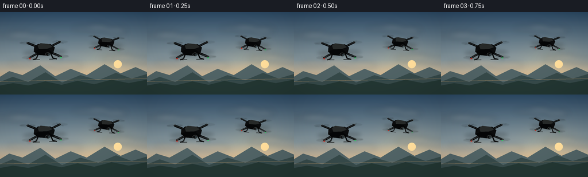
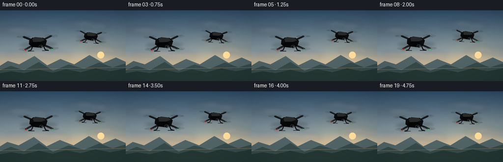
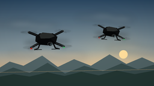

CODING AGENTS AS PIXEL WORLD MODELS
traex/GPT-5.6-Sol · instance_preservation_0042
点击播放 · 原生 RGB 像素
逐轮保存的候选
回放视频、检查图与代码变化。
每份候选均可单独播放。实际图片检查记录在下方工具轨迹中。
候选 01播放与检查图
点击播放 · 原生 RGB 像素


展开代码变化
--- 上一保存版本
+++ 本次保存版本
@@ -0,0 +1,202 @@
+from pathlib import Path
+import math
+import numpy as np
+from PIL import Image, ImageDraw, ImageFilter
+import artifact_io
+
+# Deterministic, entirely procedural text-to-video scene.
+W, H, N, FPS = 256, 144, 20, 4.0
+S = 4
+WW, HH = W*S, H*S
+TAU = math.tau
+
+
+def scpt(p):
+ return (int(round(p[0]*S)), int(round(p[1]*S)))
+
+
+def poly(draw, pts, fill):
+ draw.polygon([scpt(p) for p in pts], fill=fill)
+
+
+def line(draw, pts, fill, width):
+ draw.line([scpt(p) for p in pts], fill=fill, width=max(1, int(width*S)), joint="curve")
+
+
+def ellipse(draw, box, fill, outline=None, width=1):
+ draw.ellipse(tuple(int(round(v*S)) for v in box), fill=fill, outline=outline,
+ width=max(1, int(width*S)))
+
+
+def transform_point(cx, cy, tilt, scale, p):
+ x, y = p[0]*scale, p[1]*scale
+ c, s = math.cos(tilt), math.sin(tilt)
+ return cx + x*c-y*s, cy + x*s+y*c
+
+
+def ellipse_points(cx, cy, rx, ry, ang, count=48):
+ ca, sa = math.cos(ang), math.sin(ang)
+ out=[]
+ for k in range(count):
+ t=TAU*k/count
+ x,y=rx*math.cos(t),ry*math.sin(t)
+ out.append((cx+x*ca-y*sa, cy+x*sa+y*ca))
+ return out
+
+
+def rotor(layer, center, radius, tilt, phase, scale, far=False):
+ d=ImageDraw.Draw(layer, 'RGBA')
+ cx,cy=center
+ rx=radius*scale
+ ry=2.7*scale
+ ang=tilt*0.55
+ # Diffuse spinning disc and ghosted propeller sweeps communicate rapid rotation.
+ blur = Image.new('RGBA', (WW, HH), (0,0,0,0))
+ bd=ImageDraw.Draw(blur, 'RGBA')
+ poly(bd, ellipse_points(cx,cy,rx,ry,ang), (24,27,29,24 if far else 30))
+ for off,alpha in ((0,75),(0.45,30),(-0.45,30)):
+ a=phase+off
+ ux,uy=math.cos(a),math.sin(a)*0.20
+ p1=(cx-rx*ux, cy-rx*uy)
+ p2=(cx+rx*ux, cy+rx*uy)
+ line(bd,[p1,p2],(12,14,15,alpha),1.35*scale)
+ blur=blur.filter(ImageFilter.GaussianBlur(0.65*S))
+ layer.alpha_composite(blur)
+ d=ImageDraw.Draw(layer,'RGBA')
+ # crisp outer rim catches the backlight
+ line(d, ellipse_points(cx,cy,rx,ry,ang,64)+[ellipse_points(cx,cy,rx,ry,ang,64)[0]],
+ (94,102,102,45 if far else 58), 0.42)
+ ellipse(d,(cx-2.25*scale,cy-1.75*scale,cx+2.25*scale,cy+1.75*scale),
+ (14,16,17,255), (105,109,106,120), 0.5)
+ ellipse(d,(cx-0.75*scale,cy-0.65*scale,cx+0.75*scale,cy+0.65*scale),(78,83,80,230))
+
+
+def draw_drone(base, cx, cy, scale, tilt, phase, led_side):
+ """A coherent black quadcopter, rendered with connected arms and four rotors."""
+ layer=Image.new('RGBA',(WW,HH),(0,0,0,0))
+ d=ImageDraw.Draw(layer,'RGBA')
+ # local rotor/motor locations, rear pair first
+ locals_=[(-28,-12),(27,-12),(-25,13),(28,13)]
+ centers=[transform_point(cx,cy,tilt,scale,p) for p in locals_]
+ # soft shadow beneath the complete craft
+ shadow=Image.new('RGBA',(WW,HH),(0,0,0,0)); sd=ImageDraw.Draw(shadow,'RGBA')
+ poly(sd,ellipse_points(cx+1,cy+5*scale,38*scale,6.0*scale,tilt),(0,0,0,45))
+ shadow=shadow.filter(ImageFilter.GaussianBlur(3.2*S))
+ layer.alpha_composite(shadow)
+ # rear rotors
+ rotor(layer,centers[0],13.5,tilt,phase+0.2,scale,True)
+ rotor(layer,centers[1],13.5,tilt,-phase+1.1,scale,True)
+ d=ImageDraw.Draw(layer,'RGBA')
+ # thick carbon arms, with subtle upper edge highlight
+ for i,(lx,ly) in enumerate(locals_):
+ root=transform_point(cx,cy,tilt,scale,(-5 if lx<0 else 5, -2 if ly<0 else 3))
+ end=centers[i]
+ line(d,[root,end],(10,12,13,255),3.7*scale)
+ line(d,[root,(end[0],end[1]-0.35*scale)],(81,88,87,150),0.7*scale)
+ # landing legs: visible, curved-looking two segment struts
+ leg1=[transform_point(cx,cy,tilt,scale,p) for p in [(-10,5),(-14,15),(-20,17)]]
+ leg2=[transform_point(cx,cy,tilt,scale,p) for p in [(10,5),(14,15),(21,17)]]
+ line(d,leg1,(8,9,10,255),2.0*scale); line(d,leg2,(8,9,10,255),2.0*scale)
+ line(d,[leg1[-1],transform_point(cx,cy,tilt,scale,(-8,17))],(18,20,20,230),1.3*scale)
+ line(d,[transform_point(cx,cy,tilt,scale,(8,17)),leg2[-1]],(18,20,20,230),1.3*scale)
+ # faceted central body, charcoal-black rather than a flat silhouette
+ body=[(-17,-5),(-10,-10),(11,-9),(18,-3),(15,7),(6,11),(-10,9),(-18,3)]
+ poly(d,[transform_point(cx,cy,tilt,scale,p) for p in body],(11,13,14,255))
+ top=[(-11,-7),(-6,-11),(9,-9),(14,-4),(5,-1),(-9,-1)]
+ poly(d,[transform_point(cx,cy,tilt,scale,p) for p in top],(38,42,42,255))
+ side=[(-18,3),(-9,-1),(6,-1),(15,7),(6,11),(-10,9)]
+ poly(d,[transform_point(cx,cy,tilt,scale,p) for p in side],(5,7,8,255))
+ # nose/camera pod
+ cam=transform_point(cx,cy,tilt,scale,(6,8))
+ ellipse(d,(cam[0]-4.2*scale,cam[1]-2.6*scale,cam[0]+4.2*scale,cam[1]+3.5*scale),(12,14,15,255),(78,83,82,230),0.7)
+ lens=transform_point(cx,cy,tilt,scale,(7.7,9.0))
+ ellipse(d,(lens[0]-1.8*scale,lens[1]-1.55*scale,lens[0]+1.8*scale,lens[1]+1.55*scale),(3,6,8,255),(80,100,106,220),0.5)
+ ellipse(d,(lens[0]-0.65*scale,lens[1]-0.60*scale,lens[0]+0.65*scale,lens[1]+0.60*scale),(82,119,130,170))
+ # Front rotors over arms/body edges
+ rotor(layer,centers[2],13.5,tilt,phase+2.0,scale,False)
+ rotor(layer,centers[3],13.5,tilt,-phase+2.7,scale,False)
+ d=ImageDraw.Draw(layer,'RGBA')
+ # Navigation lights: small and physically attached, color differentiates orientation
+ for idx,col in ((2,(220,36,24,255)),(3,(48,218,106,255))):
+ mx,my=centers[idx]
+ ellipse(d,(mx-1.25*scale,my+1.0*scale,mx+1.25*scale,my+2.5*scale),col)
+ glow=Image.new('RGBA',(WW,HH),(0,0,0,0)); gd=ImageDraw.Draw(glow,'RGBA')
+ ellipse(gd,(mx-3.2*scale,my-1.0*scale,mx+3.2*scale,my+4.7*scale),(*col[:3],42))
+ layer.alpha_composite(glow.filter(ImageFilter.GaussianBlur(2.2*S)))
+ base.alpha_composite(layer)
+
+
+def background(frame):
+ # Cinematic late-afternoon sky, with a stable gradient and slow cloud drift.
+ yy=np.linspace(0,1,HH)[:,None,None]
+ top=np.array([44,75,104.],dtype=float)[None,None,:]
+ mid=np.array([157,174,177.],dtype=float)[None,None,:]
+ low=np.array([244,186,119.],dtype=float)[None,None,:]
+ a=np.clip(yy/0.72,0,1)
+ sky=top*(1-a)+mid*a
+ b=np.clip((yy-0.58)/0.42,0,1)
+ sky=sky*(1-b)+low*b
+ sky=np.broadcast_to(sky,(HH,WW,3)).copy()
+ # mild horizontal warm sun glow
+ xx=np.linspace(0,1,WW)[None,:,None]
+ glow=np.exp(-((xx-.74)/.23)**2 - ((yy-.70)/.28)**2)
+ sky += glow*np.array([23,12,-5])[None,None,:]
+ img=Image.fromarray(np.uint8(np.clip(sky,0,255)),'RGB').convert('RGBA')
+ # layered painterly clouds, drifting consistently to the right
+ cloud=Image.new('RGBA',(WW,HH),(0,0,0,0)); cd=ImageDraw.Draw(cloud,'RGBA')
+ drift=frame*0.35
+ clusters=[
+ (-12+drift,35,[(0,4,35,8),(23,0,70,11),(60,5,108,14)],(210,221,221,62)),
+ (126+drift*.5,22,[(0,4,35,10),(24,0,63,11),(56,5,96,15)],(220,228,226,52)),
+ (12-drift*.25,82,[(0,3,42,12),(35,-1,88,14),(78,5,132,17)],(244,205,158,42)),
+ (176+drift*.2,75,[(0,2,30,10),(19,-1,58,11),(47,4,88,14)],(245,212,170,50))]
+ for ox,oy,parts,col in clusters:
+ for x1,y1,x2,y2 in parts:
+ ellipse(cd,(ox+x1,oy+y1,ox+x2,oy+y2),col)
+ cloud=cloud.filter(ImageFilter.GaussianBlur(5.5*S))
+ img.alpha_composite(cloud)
+ d=ImageDraw.Draw(img,'RGBA')
+ # sun behind haze
+ sx,sy=205+drift*.08,91
+ ellipse(d,(sx-7,sy-7,sx+7,sy+7),(255,226,161,120))
+ # far mountain ridges, subtle parallax
+ p=frame*0.12
+ ridge=[(-10-p,119),(16-p,103),(39-p,110),(70-p,93),(96-p,112),(123-p,99),(151-p,110),(182-p,91),(210-p,107),(236-p,96),(270-p,111),(270,145),(-10,145)]
+ poly(d,ridge,(80,101,105,170))
+ ridge2=[(-10+p*.3,126),(22,113),(49,122),(79,105),(108,123),(140,110),(171,119),(202,106),(229,116),(270,104),(270,145),(-10,145)]
+ poly(d,ridge2,(54,75,76,235))
+ # treeline silhouettes and softly lit valley floor
+ poly(d,[(-5,129),(23,124),(49,128),(79,121),(107,127),(135,120),(164,126),(194,118),(224,124),(261,117),(261,145),(-5,145)],(35,56,53,255))
+ # atmospheric highlight along horizon
+ line(d,[(0,121),(256,116)],(237,185,123,55),0.5)
+ return img
+
+
+def make_frame(i):
+ img=background(i)
+ t=i/(N-1)
+ # Independent, restrained hover motion: identity and relative placement remain constant.
+ x1=76.5 + 2.0*math.sin(TAU*(t*0.56)+0.2)
+ y1=64.0 + 1.7*math.sin(TAU*(t*0.82)+0.8)
+ tilt1=math.radians(-2.0 + 1.6*math.sin(TAU*t*0.47))
+ x2=183.5 + 1.6*math.sin(TAU*(t*0.48)+2.0)
+ y2=52.0 + 1.35*math.sin(TAU*(t*0.75)+2.2)
+ tilt2=math.radians(2.5 + 1.3*math.sin(TAU*t*0.51+1.5))
+ # Far craft first, then nearer craft; never overlap.
+ draw_drone(img,x2,y2,0.78,tilt2,i*2.42+0.7,1)
+ draw_drone(img,x1,y1,1.02,tilt1,i*2.75,0)
+ # faint warm grading and vignette unify the rendering
+ arr=np.asarray(img.convert('RGB').resize((W,H),Image.Resampling.LANCZOS)).astype(np.float32)
+ y,x=np.mgrid[0:H,0:W]
+ vig=1.0-0.14*np.clip(((x-W/2)/(W*.72))**2+((y-H/2)/(H*.75))**2,0,1)
+ arr*=vig[...,None]
+ arr[...,0]*=1.025; arr[...,2]*=.985
+ return np.uint8(np.clip(arr,0,255))
+
+
+def main():
+ frames=np.stack([make_frame(i) for i in range(N)],axis=0)
+ artifact_io.save(frames,Path(__file__).resolve().parent)
+
+if __name__=='__main__':
+ main()
可观测工具轨迹
实际执行的命令与返回图片。
命令 1exit 0
/bin/bash -lc "ls -la && printf '\\n--- prompt.txt ---\\n' && cat prompt.txt && printf '\\n--- GENERATION_RULES.md ---\\n' && cat GENERATION_RULES.md && printf '\\n--- task_spec.json ---\\n' && cat task_spec.json"
命令 2exit 0
/bin/bash -lc "sed -n '1,240p' artifact_io.py"
命令 3exit 0
/bin/bash -lc "cat > generate.py <<'PY'
from pathlib import Path
import math
import numpy as np
from PIL import Image, ImageDraw, ImageFilter
import artifact_io
# Deterministic, entirely procedural text-to-video scene.
W, H, N, FPS = 256, 144, 20, 4.0
S = 4
WW, HH = W*S, H*S
TAU = math.tau
def scpt(p):
return (int(round(p[0]*S)), int(round(p[1]*S)))
def poly(draw, pts, fill):
draw.polygon([scpt(p) for p in pts], fill=fill)
def line(draw, pts, fill, width):
draw.line([scpt(p) for p in pts], fill=fill, width=max(1, int(width*S)), joint=\"curve\")
def ellipse(draw, box, fill, outline=None, width=1):
draw.ellipse(tuple(int(round(v*S)) for v in box), fill=fill, outline=outline,
width=max(1, int(width*S)))
def transform_point(cx, cy, tilt, scale, p):
x, y = p[0]*scale, p[1]*scale
c, s = math.cos(tilt), math.sin(tilt)
return cx + x*c-y*s, cy + x*s+y*c
def ellipse_points(cx, cy, rx, ry, ang, count=48):
ca, sa = math.cos(ang), math.sin(ang)
out=[]
for k in range(count):
t=TAU*k/count
x,y=rx*math.cos(t),ry*math.sin(t)
out.append((cx+x*ca-y*sa, cy+x*sa+y*ca))
return out
def rotor(layer, center, radius, tilt, phase, scale, far=False):
d=ImageDraw.Draw(layer, 'RGBA')
cx,cy=center
rx=radius*scale
ry=2.7*scale
ang=tilt*0.55
# Diffuse spinning disc and ghosted propeller sweeps communicate rapid rotation.
blur = Image.new('RGBA', (WW, HH), (0,0,0,0))
bd=ImageDraw.Draw(blur, 'RGBA')
poly(bd, ellipse_points(cx,cy,rx,ry,ang), (24,27,29,24 if far else 30))
for off,alpha in ((0,75),(0.45,30),(-0.45,30)):
a=phase+off
ux,uy=math.cos(a),math.sin(a)*0.20
p1=(cx-rx*ux, cy-rx*uy)
p2=(cx+rx*ux, cy+rx*uy)
line(bd,[p1,p2],(12,14,15,alpha),1.35*scale)
blur=blur.filter(ImageFilter.GaussianBlur(0.65*S))
layer.alpha_composite(blur)
d=ImageDraw.Draw(layer,'RGBA')
# crisp outer rim catches the backlight
line(d, ellipse_points(cx,cy,rx,ry,ang,64)+[ellipse_points(cx,cy,rx,ry,ang,64)[0]],
(94,102,102,45 if far else 58), 0.42)
ellipse(d,(cx-2.25*scale,cy-1.75*scale,cx+2.25*scale,cy+1.75*scale),
(14,16,17,255), (105,109,106,120), 0.5)
ellipse(d,(cx-0.75*scale,cy-0.65*scale,cx+0.75*scale,cy+0.65*scale),(78,83,80,230))
def draw_drone(base, cx, cy, scale, tilt, phase, led_side):
\"\"\"A coherent black quadcopter, rendered with connected arms and four rotors.\"\"\"
layer=Image.new('RGBA',(WW,HH),(0,0,0,0))
d=ImageDraw.Draw(layer,'RGBA')
# local rotor/motor locations, rear pair first
locals_=[(-28,-12),(27,-12),(-25,13),(28,13)]
centers=[transform_point(cx,cy,tilt,scale,p) for p in locals_]
# soft shadow beneath the complete craft
shadow=Image.new('RGBA',(WW,HH),(0,0,0,0)); sd=ImageDraw.Draw(shadow,'RGBA')
poly(sd,ellipse_points(cx+1,cy+5*scale,38*scale,6.0*scale,tilt),(0,0,0,45))
shadow=shadow.filter(ImageFilter.GaussianBlur(3.2*S))
layer.alpha_composite(shadow)
# rear rotors
rotor(layer,centers[0],13.5,tilt,phase+0.2,scale,True)
rotor(layer,centers[1],13.5,tilt,-phase+1.1,scale,True)
d=ImageDraw.Draw(layer,'RGBA')
# thick carbon arms, with subtle upper edge highlight
for i,(lx,ly) in enumerate(locals_):
root=transform_point(cx,cy,tilt,scale,(-5 if lx<0 else 5, -2 if ly<0 else 3))
end=centers[i]
line(d,[root,end],(10,12,13,255),3.7*scale)
line(d,[root,(end[0],end[1]-0.35*scale)],(81,88,87,150),0.7*scale)
# landing legs: visible, curved-looking two segment struts
leg1=[transform_point(cx,cy,tilt,scale,p) for p in [(-10,5),(-14,15),(-20,17)]]
leg2=[transform_point(cx,cy,tilt,scale,p) for p in [(10,5),(14,15),(21,17)]]
line(d,leg1,(8,9,10,255),2.0*scale); line(d,leg2,(8,9,10,255),2.0*scale)
line(d,[leg1[-1],transform_point(cx,cy,tilt,scale,(-8,17))],(18,20,20,230),1.3*scale)
line(d,[transform_point(cx,cy,tilt,scale,(8,17)),leg2[-1]],(18,20,20,230),1.3*scale)
# faceted central body, charcoal-black rather than a flat silhouette
body=[(-17,-5),(-10,-10),(11,-9),(18,-3),(15,7),(6,11),(-10,9),(-18,3)]
poly(d,[transform_point(cx,cy,tilt,scale,p) for p in body],(11,13,14,255))
top=[(-11,-7),(-6,-11),(9,-9),(14,-4),(5,-1),(-9,-1)]
poly(d,[transform_point(cx,cy,tilt,scale,p) for p in top],(38,42,42,255))
side=[(-18,3),(-9,-1),(6,-1),(15,7),(6,11),(-10,9)]
poly(d,[transform_point(cx,cy,tilt,scale,p) for p in side],(5,7,8,255))
# nose/camera pod
cam=transform_point(cx,cy,tilt,scale,(6,8))
ellipse(d,(cam[0]-4.2*scale,cam[1]-2.6*scale,cam[0]+4.2*scale,cam[1]+3.5*scale),(12,14,15,255),(78,83,82,230),0.7)
lens=transform_point(cx,cy,tilt,scale,(7.7,9.0))
ellipse(d,(lens[0]-1.8*scale,lens[1]-1.55*scale,lens[0]+1.8*scale,lens[1]+1.55*scale),(3,6,8,255),(80,100,106,220),0.5)
ellipse(d,(lens[0]-0.65*scale,lens[1]-0.60*scale,lens[0]+0.65*scale,lens[1]+0.60*scale),(82,119,130,170))
# Front rotors over arms/body edges
rotor(layer,centers[2],13.5,tilt,phase+2.0,scale,False)
rotor(layer,centers[3],13.5,tilt,-phase+2.7,scale,False)
d=ImageDraw.Draw(layer,'RGBA')
# Navigation lights: small and physically attached, color differentiates orientation
for idx,col in ((2,(220,36,24,255)),(3,(48,218,106,255))):
mx,my=centers[idx]
ellipse(d,(mx-1.25*scale,my+1.0*scale,mx+1.25*scale,my+2.5*scale),col)
glow=Image.new('RGBA',(WW,HH),(0,0,0,0)); gd=ImageDraw.Draw(glow,'RGBA')
ellipse(gd,(mx-3.2*scale,my-1.0*scale,mx+3.2*scale,my+4.7*scale),(*col[:3],42))
layer.alpha_composite(glow.filter(ImageFilter.GaussianBlur(2.2*S)))
base.alpha_composite(layer)
def background(frame):
# Cinematic late-afternoon sky, with a stable gradient and slow cloud drift.
yy=np.linspace(0,1,HH)[:,None,None]
top=np.array([44,75,104.],dtype=float)[None,None,:]
mid=np.array([157,174,177.],dtype=float)[None,None,:]
low=np.array([244,186,119.],dtype=float)[None,None,:]
a=np.clip(yy/0.72,0,1)
sky=top*(1-a)+mid*a
b=np.clip((yy-0.58)/0.42,0,1)
sky=sky*(1-b)+low*b
sky=np.broadcast_to(sky,(HH,WW,3)).copy()
# mild horizontal warm sun glow
xx=np.linspace(0,1,WW)[None,:,None]
glow=np.exp(-((xx-.74)/.23)**2 - ((yy-.70)/.28)**2)
sky += glow*np.array([23,12,-5])[None,None,:]
img=Image.fromarray(np.uint8(np.clip(sky,0,255)),'RGB').convert('RGBA')
# layered painterly clouds, drifting consistently to the right
cloud=Image.new('RGBA',(WW,HH),(0,0,0,0)); cd=ImageDraw.Draw(cloud,'RGBA')
drift=frame*0.35
clusters=[
(-12+drift,35,[(0,4,35,8),(23,0,70,11),(60,5,108,14)],(210,221,221,62)),
(126+drift*.5,22,[(0,4,35,10),(24,0,63,11),(56,5,96,15)],(220,228,226,52)),
(12-drift*.25,82,[(0,3,42,12),(35,-1,88,14),(78,5,132,17)],(244,205,158,42)),
(176+drift*.2,75,[(0,2,30,10),(19,-1,58,11),(47,4,88,14)],(245,212,170,50))]
for ox,oy,parts,col in clusters:
for x1,y1,x2,y2 in parts:
ellipse(cd,(ox+x1,oy+y1,ox+x2,oy+y2),col)
cloud=cloud.filter(ImageFilter.GaussianBlur(5.5*S))
img.alpha_composite(cloud)
d=ImageDraw.Draw(img,'RGBA')
# sun behind haze
sx,sy=205+drift*.08,91
ellipse(d,(sx-7,sy-7,sx+7,sy+7),(255,226,161,120))
# far mountain ridges, subtle parallax
p=frame*0.12
ridge=[(-10-p,119),(16-p,103),(39-p,110),(70-p,93),(96-p,112),(123-p,99),(151-p,110),(182-p,91),(210-p,107),(236-p,96),(270-p,111),(270,145),(-10,145)]
poly(d,ridge,(80,101,105,170))
ridge2=[(-10+p*.3,126),(22,113),(49,122),(79,105),(108,123),(140,110),(171,119),(202,106),(229,116),(270,104),(270,145),(-10,145)]
poly(d,ridge2,(54,75,76,235))
# treeline silhouettes and softly lit valley floor
poly(d,[(-5,129),(23,124),(49,128),(79,121),(107,127),(135,120),(164,126),(194,118),(224,124),(261,117),(261,145),(-5,145)],(35,56,53,255))
# atmospheric highlight along horizon
line(d,[(0,121),(256,116)],(237,185,123,55),0.5)
return img
def make_frame(i):
img=background(i)
t=i/(N-1)
# Independent, restrained hover motion: identity and relative placement remain constant.
x1=76.5 + 2.0*math.sin(TAU*(t*0.56)+0.2)
y1=64.0 + 1.7*math.sin(TAU*(t*0.82)+0.8)
tilt1=math.radians(-2.0 + 1.6*math.sin(TAU*t*0.47))
x2=183.5 + 1.6*math.sin(TAU*(t*0.48)+2.0)
y2=52.0 + 1.35*math.sin(TAU*(t*0.75)+2.2)
tilt2=math.radians(2.5 + 1.3*math.sin(TAU*t*0.51+1.5))
# Far craft first, then nearer craft; never overlap.
draw_drone(img,x2,y2,0.78,tilt2,i*2.42+0.7,1)
draw_drone(img,x1,y1,1.02,tilt1,i*2.75,0)
# faint warm grading and vignette unify the rendering
arr=np.asarray(img.convert('RGB').resize((W,H),Image.Resampling.LANCZOS)).astype(np.float32)
y,x=np.mgrid[0:H,0:W]
vig=1.0-0.14*np.clip(((x-W/2)/(W*.72))**2+((y-H/2)/(H*.75))**2,0,1)
arr*=vig[...,None]
arr[...,0]*=1.025; arr[...,2]*=.985
return np.uint8(np.clip(arr,0,255))
def main():
frames=np.stack([make_frame(i) for i in range(N)],axis=0)
artifact_io.save(frames,Path(__file__).resolve().parent)
if __name__=='__main__':
main()
PY
python generate.py
ls -lh pixels.npz inspection.png index.html frames/00.png"视觉工具实际返回图片 1

视觉工具实际返回图片 2

视觉工具实际返回图片 3

保存候选 1 份；完成命令 3 次；可验证图片返回 3 张。原始 API 响应与完整日志保留在本地。